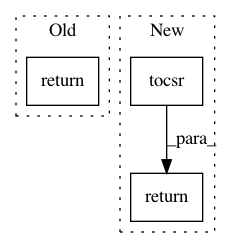

d8e610c04662817816d5d7cb5de2578cb48f3ddb,pygsp/graphs/graph.py,Graph,subgraph,#Graph#Any#,269
Before Change
sub_G.gtype = "sub-" + self.gtype
return sub_G
def is_connected(self):
r
Function to check the strong connectivity of the input graph.
After Change
N = len(ind)
sub_W = self.W.tocsr()[ind, :].tocsc()[:, ind]
return Graph(sub_W, gtype="sub-{}".format(self.gtype))
def is_connected(self, force_recompute=False):
r
Check the strong connectivity of the input graph.
In pattern: SUPERPATTERN
Frequency: 4
Non-data size: 3
Instances
Project Name: epfl-lts2/pygsp
Commit Name: d8e610c04662817816d5d7cb5de2578cb48f3ddb
Time: 2015-12-09
Author: lionel.martin@epfl.ch
File Name: pygsp/graphs/graph.py
Class Name: Graph
Method Name: subgraph
Project Name: scikit-learn-contrib/sklearn-pandas
Commit Name: ae885db17320662cc8c0e940d8e27a30dc105eb1
Time: 2015-11-07
Author: israel.saeta@dukebody.com
File Name: sklearn_pandas/__init__.py
Class Name: DataFrameMapper
Method Name: transform
Project Name: automl/auto-sklearn
Commit Name: e92e45a59894ee9da96bdf044edb51e8a916185d
Time: 2017-11-17
Author: feurerm@informatik.uni-freiburg.de
File Name: autosklearn/pipeline/implementations/OneHotEncoder.py
Class Name:
Method Name: _transform_selected
Project Name: scipy/scipy
Commit Name: f65eddd2450ed20cf349ac6aa2ee792042e9f5b9
Time: 2014-07-07
Author: joel.nothman@gmail.com
File Name: scipy/sparse/csc.py
Class Name: csc_matrix
Method Name: getrow